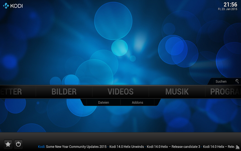
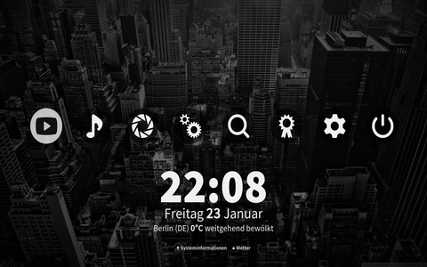
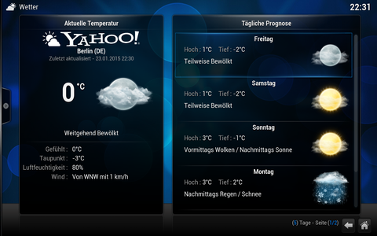
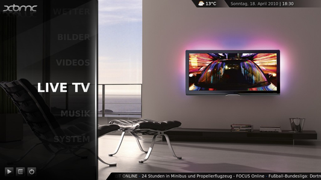

Kodi
Dieser Artikel wurde für die folgenden Ubuntu-Versionen getestet:
Ubuntu 16.04 Xenial Xerus
Ubuntu 14.04 Trusty Tahr
Zum Verständnis dieses Artikels sind folgende Seiten hilfreich:
Kodi  (vormals XBMC alias XBox Media Center) wurde ursprünglich für die XBox entwickelt. Die Namensänderung in Kodi (Kodi Entertainment Center) wurde vorgenommen, da die Software u.a. auf aktuellen XBox-Varianten wie Xbox 360 oder XBox One nicht mehr funktionsfähig ist. Durch die einfache Installation und den großen Komfort ist Kodi ein kostenloses Profi-Entertainment-System. Das Media-Center unterstützt die Wiedergabe von Videos und Musik, zeigt Bilder als Diaschau an und kann durch Erweiterungen im Funktionsumfang angepasst werden. Hier lassen sich Plugins und Python-Skripte einbinden. So ist die Anzeige des aktuellen Wetters, die Einblendung von RSS-Feeds, Nutzung von Scrapern et cetera möglich.
(vormals XBMC alias XBox Media Center) wurde ursprünglich für die XBox entwickelt. Die Namensänderung in Kodi (Kodi Entertainment Center) wurde vorgenommen, da die Software u.a. auf aktuellen XBox-Varianten wie Xbox 360 oder XBox One nicht mehr funktionsfähig ist. Durch die einfache Installation und den großen Komfort ist Kodi ein kostenloses Profi-Entertainment-System. Das Media-Center unterstützt die Wiedergabe von Videos und Musik, zeigt Bilder als Diaschau an und kann durch Erweiterungen im Funktionsumfang angepasst werden. Hier lassen sich Plugins und Python-Skripte einbinden. So ist die Anzeige des aktuellen Wetters, die Einblendung von RSS-Feeds, Nutzung von Scrapern et cetera möglich.
Auf kodi.tv gibt es eine komplette Liste aller Funktionen. Kodi lässt sich außerdem auch per Fernbedienung steuern. Hier gibt es zwei Varianten: Per Android- oder iOS-Gerät oder ganz klassisch per Infrarotfernbedienung mit LIRC.
Kodibuntu¶
Achtung!
Kodibuntu wird nicht mehr gepflegt und kann nicht mehr heruntergeladen werden.
Kodi konnte auch als Live-CD von der Projektseite Kodibuntu heruntergeladen werden. Diese Live-CD konnte man ausprobieren oder auf der Festplatte installieren (8 GiB wurden benötigt). Kodibuntu (ehemals XBMCBuntu) war ein inoffizielles Ubuntu-Derivat (basierend auf Lubuntu 14.04) mit vorinstalliertem Kodi. Es war für Systeme vorgesehen, die eher die Rolle eines Mediacenters erfüllten. Das System war so eingestellt, dass nach dem Booten per Auto-Login Kodi ohne Desktop-Umgebung startete. Man konnte aber auch Kodi beenden und stattdessen Lubuntu als Sitzung in LightDM auswählen.
|  |  |
| Hauptmenü | Theme: Maximinimalism |
Installation¶
In Ubuntu 16.04 kann Kodi unter dem Namen Kodi gefunden werden:
kodi (universe)
 mit apturl
mit apturl
Paketliste zum Kopieren:
sudo apt-get install kodi
sudo aptitude install kodi
Für Versionen älter als Ubuntu 16.04 ist der Paketname weiterhin xbmc:
xbmc (universe)
mit apturl
Paketliste zum Kopieren:
sudo apt-get install xbmc
sudo aptitude install xbmc
Alternativ kann die Linuxversion als Fremdpaket über die Projektseite von Kodi  heruntergeladen oder ein "Personal Package Archiv" (PPA) [2] zur Installation genutzt werden.
heruntergeladen oder ein "Personal Package Archiv" (PPA) [2] zur Installation genutzt werden.
Kodi nutzt für die Verwaltung von Videos und Musik Datenbanken. Standardmäßig sind diese lokal abgelegt. In diesem Fall spielt die Wahl des PPA eine untergeordnete Rolle; es bietet sich das Kodi-Team PPA an. Sind in einem Heimnetzwerk jedoch mehrer Kodis (auch auf unterschiedlichen Platformen) mit einer gemeinsamen SQL-Datenbank (separt manuell zu konfigurieren) im Einsatz, ist streng darauf zu achten, dass alle Kodis in der gleichen Version laufen. Jede Kodi-Version nutzt ihre eigene Datenbank-Version. In diesem Fall ist ein PPA zu wählen, welches sich auf eine konkrete Kodi-Version beschränkt.
Kodi-Team PPA¶
Dieses PPA empfiehlt sich insbesondere ab Ubuntu 14.04, wenn man mit Kodi fernsehen will.
Adresszeile zum Hinzufügen des PPAs:
ppa:team-xbmc/ppa
Hinweis!
Zusätzliche Fremdquellen können das System gefährden.
Ein PPA unterstützt nicht zwangsläufig alle Ubuntu-Versionen. Weitere Informationen sind der  PPA-Beschreibung des Eigentümers/Teams team-xbmc zu entnehmen.
PPA-Beschreibung des Eigentümers/Teams team-xbmc zu entnehmen.
Damit Pakete aus dem PPA genutzt werden können, müssen die Paketquellen neu eingelesen werden.
Kodi-Version 15.x (Isengard)¶
Adresszeile zum Hinzufügen des PPAs:
ppa:nkvoronov/kodi-isengard
Hinweis!
Zusätzliche Fremdquellen können das System gefährden.
Ein PPA unterstützt nicht zwangsläufig alle Ubuntu-Versionen. Weitere Informationen sind der PPA-Beschreibung des Eigentümers/Teams nkvoronov zu entnehmen.
Damit Pakete aus dem PPA genutzt werden können, müssen die Paketquellen neu eingelesen werden.
Kodi-Version 16.x (Jarvis)¶
Adresszeile zum Hinzufügen des PPAs:
ppa:nkvoronov/kodi-jarvis
Hinweis!
Zusätzliche Fremdquellen können das System gefährden.
Ein PPA unterstützt nicht zwangsläufig alle Ubuntu-Versionen. Weitere Informationen sind der PPA-Beschreibung des Eigentümers/Teams nkvoronov zu entnehmen.
Damit Pakete aus dem PPA genutzt werden können, müssen die Paketquellen neu eingelesen werden.
Nach dem Aktualisieren der Paketquellen muss folgendes Paket für die Version 14 oder neuer installiert [1] werden:
kodi (ppa)
mit apturl
Paketliste zum Kopieren:
sudo apt-get install kodi
sudo aptitude install kodi
Anschließend findet sich ein Eintrag im Menü unter "Unterhaltungsmedien" (LXDE) resp. "Multimedia" (Xfce und KDE), mit dem sich Kodi starten lässt. Bei Unity sucht man in der Dash nach Kodi.
Das Mediacenter startet mit der Standardoberfläche Confluence.
Oberfläche¶
Die Steuerungselemente heben sich mit ihrer weißen Schrift und den weißen Symbolen gut davon ab. Im Hintergrund zeigt das Programm Bilder, die die einzelnen Funktionen zum Ausdruck bringen. Zur Not lässt sich Kodi auch mit der Maus steuern, was sich aber nicht empfiehlt, da die Mausführung sehr ungenau ist. Die Tastatursteuerung funktioniert dagegen sehr gut. Zum Ansteuern der Medien werden nur die ↑ , ↓ , ← , → , ⏎ und die Esc -Tasten benötigt.
|  |
| Yahoo! Weather |
Konfiguration¶
Sprache¶
Über "System → Settings → Appearance → International → Language" kann die Sprache der Oberfläche angepasst werden (nach German). Ebenfalls dort die Zeitzone und die Tastaturbelegungen festlegen.
Wetter¶
Zu Kodi gehört unter anderem auch noch die Funktion, das aktuelle Wetter abzurufen. Um von einem Ort das aktuelle Wetter zu empfangen, kann der gewünschte Ort unter "Einstellungen → Wetter" gesucht und ausgewählt werden. Zurück im "Hauptmenü werden die aktuellen Wetterdaten angezeigt, wenn das "Wetter"-Menü geöffnet wird.
Medien/Quellen einbinden¶
Um Medien abspielen zu können, müssen in Kodi Quellen hinzugefügt werden. Quellen sind nichts anderes als Speicherorte von Dateien. Das können lokale Festplatten, externe Laufwerke, Samba-Freigaben oder ähnliches sein. Um eine Quelle hinzuzufügen, wählt man je nach Datei "Videos", "Musik" oder "Bilder" und anschließend "Quelle hinzufügen". Nun wird der Speicherort der Dateien angegeben und nach mehrmaligem Bestätigen erscheint die Quelle nun in der vollständigen Liste.
Filme/Videos¶
Kodi kann natürlich auch die unterschiedlichsten Filme und Videos wiedergeben. Leider ist die Format- und Codec-Vielfalt im Videosegment im Gegensatz zu Musik und Bildern sehr unübersichtlich. Trotzdem beherrscht Kodi mehr Formate als ein handelsüblicher DVD-Player.
Im Kodi-Wiki kann eine Liste der Container und Video-Formate abgerufen werden.
In Verbindung mit einem MakeMKV-Plugin ist es möglich, Videos von Blu-Rays abzuspielen. Dieses kann als plugin.makemkvbluray.zip heruntergeladen und anschließend in Kodi installiert werden (siehe auch BluRay-Support  ).
).
Hinweis:
Filme und Serien unterliegen einem Namensschema , welches die Suche mit Scrapern erleichtert.
Musik¶
Die Vorgehensweise ist genau so wie bei Fotos oder Videos. Eine neue Quelle wird gesucht, benannt und eingebunden. Die Quelle wird dann ausgewählt und der gewünschte Titel oder das Album abgespielt. Die Cover für die Alben sucht sich Kodi selbst (eine Internetverbindung vorausgesetzt).
Es besteht auch die Möglichkeit, Musik von der externen Festplatte oder dem DVD-Laufwerk abzuspielen. Dazu kommen noch diverse Netzwerkoptionen. Damit ist jedoch nicht der Zugriff auf SMB-Freigaben gemeint, sondern ist ein Windows oder Mac OS X-Rechner im Netzwerk mit Itunes aktiv, können die dortigen Playlisten freigegeben werden, um sie anderen iTunes-Anwendern zur Verfügung zu stellen. Kodi beherrscht ebenfalls das Protokoll, so dass auf diese Bibliotheken zugegriffen werden kann.
Kodi bietet außerdem Zugriff auf Internet-Radio-Stationen des Übersichtsseite SHOUTcast . Die Zugangsdaten sind bereits konfiguriert und man muss sich nur noch durch das große Archiv wühlen, um den gewünschten Sender zu finden. Die Sortierung der Radiosender nach Musik-Genres hilft dabei.
Präsentation von Fotos und Dias¶
Auch zum Präsentieren oder Anzeigen von Fotos eignet sich Kodi. Soll ein Bild abgerufen werden, so wird in den hinzugefügten Bilderordner navigiert und das entsprechende Bild ausgesucht und mit ⏎ geöffnet. Kodi zeigt das Bild nun in voller Größe an und mittels der Pfeiltasten kann durch die Bilder geblättert werden.
Sollen die Bilder als Diaschau wiedergegeben werden, wird zunächst die gewünschte Quelle ausgewählt und dann in das Menü "Diaschau" gewechselt. Nun wird eine Diaschau abgespielt, welche über das Kontextmenü "Einstellungen" konfiguriert werden kann. Die Anzeige von Fotos kann außerdem auch mit Musik aus den Playlisten untermalt werden.
Fernbedienung¶
Official Kodi Remote¶
Die Official Kodi Remote kann im App-Store unter dem Namen "Official Kodi Remote" (Entwickler TEAM-XBMC) gefunden und installiert werden. Nach der Installation muss in den Optionen der App noch der entsprechende Host-Computer mit seiner IP-Adresse (bzw. Domain Name) und dem Port (gewöhnlich 8080) eingetragen werden. Idealerweise befinden sich Host-PC und mobiles Gerät, z.B. per WLAN, im selben Heimnetzwerk. Es lassen sich auch mehrere Hosts nebeneinander verwalten. In Kodi selbst muss die Option "System → Netzwerk → Server → Steuerung über Web-Interface zulassen" aktiviert werden, hier kann auch der Standard-Port geändert werden. Es empfiehlt sich außerdem ein Passwort für die Verbindung zu setzen.
Hat alles geklappt lassen sich nun die Musik- und Videobibliotheken direkt vom Mobiltelefon/Tablet durchsuchen und abspielen. Auch Coverbilder von Alben, TV-Serien und Filmen werden auf das Mobilgerät übertragen. Alternativ lässt sich noch die "Remote Control" benutzen, die eine klassische Fernbedienung mit Steuerkreuz und gängigen Abspieltasten nachahmt.
Yatse¶
Yatse, the XBMC / Kodi Remote von Tolriq ist eine Anwendung mit der das Mediacenter unter Android ferngesteuert werden kann. Durch Erweiterungen können Zusatzfunktionen, z.B. das streamen von Inhalten auf das Androidgerät, implementiert werden.
Weboberflächen¶
Mithilfe von den Addons in der Rubrik Weboberfläche lassen sich Fernsteuerungen welche mit einem Browser funktionieren nachinstallieren. Der Host-Computer muss mit seiner IP-Adresse (bzw. Domain Name) und dem Port (gewöhnlich 8080) aufgerufen werden. Idealerweise befinden sich der Host-PC und Fernsteuerungs-Gerät, z.B. per WLAN, im selben Heimnetzwerk. In Kodi selbst muss die Option "System → Netzwerk → Server → Steuerung über Web-Interface zulassen" aktiviert werden, hier kann auch der Standard-Port geändert werden. Es empfiehlt sich außerdem ein Passwort für die Verbindung zu setzen.
Neben klassischen Fernsteuerungen gibt es auch Addons, welche das Verwalten der Medien zulassen.
Infrarot-Fernbedienung¶
Hinweis:
Um Kodi mit der Fernbedienung zu steuern, gibt es zwei Wege: einer führt über eine im Kernel integrierte Funktion (siehe Kodi Remote), der andere setzt das Programm LIRC voraus. Nachfolgend wird speziell die zweite Variante behandelt.
Die Zuordnung der LIRC-Tasten bei Kodi weicht von der üblichen Vorgehensweise ab. Es gibt zwei unterschiedliche Methoden, um eine Fernbedienung mit Kodi nutzen zu können. Hier wird lediglich die einfachere Variante beschrieben, bei der allerdings auch die Anzahl der benutzbaren Tasten begrenzt ist.
In ~/.xbmc/userdata/ müssen die Dateien keymap.xml und Lircmap.xml angelegt werden, Vorlagen sind unter /usr/share/xbmc/system/ zu finden.
Lircmap.xml¶
In der Datei Lircmap.xml werden die LIRC-Tastencodes den gewünschten Kodi-Ereignissen zugeordnet. Der Aufbau der Einträge ist wie folgt:
<lircmap>
<remote device="LIRC_REMOTE_NAME">
<BUTTON_EVENT> LIRC_BUTTON_NAME </BUTTON_EVENT>
</remote>
</lircmap>Für LIRC_REMOTE_NAME muss die Bezeichnung der verwendeten LIRC-Fernbedienung angegeben werden. LIRC_BUTTON_NAME ist der jeweils zuzuordnende LIRC-Tastencode, der dem jeweiligen Ereignis BUTTON_EVENT zugeordnet wird. Die Bezeichnung der einzelnen BUTTON_EVENTs kann frei gewählt werden, erst später werden diese eindeutigen Aktionen zugeordnet. Eine Beispielkonfiguration könnte wie folgt aussehen:
<lircmap>
<remote device="x10">
<pause>pause</pause>
<stop>stop</stop>
<forward>forward</forward>
<reverse>rewind</reverse>
...
</remote>
</lircmap>keymap.xml¶
Die Datei keymap.xml keyboard.xml ordnet den in der Lircmap.xml konfigurierten BUTTON_EVENTs die entsprechend auszuführenden Aktionen XBMC_ACTION zu. Die Grundstruktur der Datei ist folgende:
<keymap>
<global>
<remote>
<BUTTON_EVENT> XBMC_ACTION </BUTTON_EVENT>
</remote>
</global>
</keymap>Eine Übersicht möglicher Kodi-Aktionen (XBMC_ACTION) ist im Kodi-Wiki zu finden. Eine Beispielkonfiguration wäre Folgende:
<keymap>
<global>
<remote>
<pause>Pause</pause>
<stop>Stop</stop>
<forward>FastForward</forward>
<reverse>Rewind</reverse>
...
</remote>
</global>
</keymap>Hinweis:
An dieser Stelle können auch Joysticks und Gamepads konfiguriert werden. Die Dateivorlage enthält entsprechende Beispielkonfigurationen.
Ausführliche Infos zur Einrichtung von Eingabegeräten für XMBC sind unter folgenden Links zu finden:
XBMC mit PC-Funkfernbedienung X10 steuern - keymap.xml und Lircmap.xml
HowTo: use all custom buttons of your remote control with LIRC
Addons¶
Durch Erweiterungen kann die Funktionalität der Software angepasst werden. So stehen unter anderem Skins zur Verfügung. In Kodi erreicht man über "Optionen → Einstellungen → Addons → Weitere Addons → Kodi addon-repository" das Repository mit den Erweiterungen. Einige Erweiterungen können noch konfiguriert werden.
| Addons | ||
| Link | Beschreibung | Kategorie |
| Mediathek | Zugriff auf die Mediathek von 3Sat, ARD, ZDF, ARTE, ORF, NDR und KiKa. | Video Add-ons |
| Universal Movie Scraper | Informationen und Bilder zu Medieninhalten herunterladen. | Film Informationen |
| YouTube | Videos der Plattform anschauen - notwendige Installation um Trailer anschauen zu können. | Video Add-ons |
| XBMC Backup | Einstellungen sichern | Programm Add-ons |
Live-TV¶
Mit Kodi ist es auch mittlerweile möglich, Live-TV wiederzugeben. Voraussetzung dafür ist eine funktionierende TV-Karte. Es gibt verschiedene Backends, welche von Kodi unterstützt werden. Damit Kodi Live-TV unterstützt, muss ein PPA [2] hinzugefügt werden. Außerdem wird ein passendes Backend benötigt, z.B. Tvheadend. Falls Kodi bereits installiert ist, müssen zuerst die Pakete xbmc, xbmc-bin, xbmc-data, xbmc-skin-confluence und xbmc-standalone entfernt werden.
Anschließend installiert man Kodi aus dem PPA.
Wer vorher aus den Quellen Xbmc installiert hatte und durch Updates nun Kodi installiert hat, kann unter Umständen Live-TV nicht mehr nutzen. Dies liegt an alten PVR-Clients. Diese müssen zuerst entfernt werden und durch den aktuellen Client ersetzt werden. Mit dem Befehl:
sudo apt-cache search pvr
werden alle verfügbaren PVR-Clients aufgelistet. Dann löscht man die alten Clients mit:
sudo apt-get purge xbmc-pvr-*
und installiert anschließend die neuen:
sudo apt-get install kodi-pvr-*
|  |
| Live-TV |
Bis Ubuntu 13.10¶
Adresszeile zum Hinzufügen des PPAs:
ppa:pulse-eight/pulse
Hinweis!
Zusätzliche Fremdquellen können das System gefährden.
Ein PPA unterstützt nicht zwangsläufig alle Ubuntu-Versionen. Weitere Informationen sind der PPA-Beschreibung des Eigentümers/Teams pulse-eight zu entnehmen.
Damit Pakete aus dem PPA genutzt werden können, müssen die Paketquellen neu eingelesen werden.
xbmc (ppa)
xbmc-standalone (ppa)
mit apturl
Paketliste zum Kopieren:
sudo apt-get install xbmc xbmc-standalone
sudo aptitude install xbmc xbmc-standalone
Ab Ubuntu 14.04¶
Ab Ubuntu 14.04 kann man aus obigem PPA keine PVR-Addons mehr installieren. Es muss das XBMC-Team PPA verwendet und das entsprechende Addon installiert werden.
Adresszeile zum Hinzufügen des PPAs:
ppa:team-xbmc/ppa
Hinweis!
Zusätzliche Fremdquellen können das System gefährden.
Ein PPA unterstützt nicht zwangsläufig alle Ubuntu-Versionen. Weitere Informationen sind der PPA-Beschreibung des Eigentümers/Teams team-xbmc zu entnehmen.
Damit Pakete aus dem PPA genutzt werden können, müssen die Paketquellen neu eingelesen werden.
kodi (ppa)
vdr-plugin-vnsiserver (VDR-Network-Streaming-Interface, ppa)
kodi-pvr-argustv (XBMC PVR Add-on Argustv, ppa)
kodi-pvr-demo (XBMC PVR Demo Add-on, ppa)
kodi-pvr-dvbviewer (XBMC PVR Add-on Dvbviewer, ppa)
kodi-pvr-mediaportal-tvserver (XBMC PVR Add-on Mediaportal Tvserver, ppa)
xbmc-pvr-mythtv-cmyth (XBMC PVR Add-on MythTv - Cmyth, ppa)
kodi-pvr-nextpvr (XBMC PVR Add-on NextPVR, ppa)
kodi-pvr-njoy (XBMC PVR Add-on Njoy, ppa)
kodi-pvr-tvheadend-hts (XBMC PVR Add-on TvHeadend Hts, ppa)
kodi-pvr-vdr-vnsi (XBMC PVR Add-on VDR Vnsi, ppa)
kodi-pvr-vuplus (XBMC PVR Add-on Vuplus, ppa)
mit apturl
Paketliste zum Kopieren:
sudo apt-get install kodi vdr-plugin-vnsiserver kodi-pvr-argustv kodi-pvr-demo kodi-pvr-dvbviewer kodi-pvr-mediaportal-tvserver xbmc-pvr-mythtv-cmyth kodi-pvr-nextpvr kodi-pvr-njoy kodi-pvr-tvheadend-hts kodi-pvr-vdr-vnsi kodi-pvr-vuplus
sudo aptitude install kodi vdr-plugin-vnsiserver kodi-pvr-argustv kodi-pvr-demo kodi-pvr-dvbviewer kodi-pvr-mediaportal-tvserver xbmc-pvr-mythtv-cmyth kodi-pvr-nextpvr kodi-pvr-njoy kodi-pvr-tvheadend-hts kodi-pvr-vdr-vnsi kodi-pvr-vuplus
Die komplette Liste der verfügbaren Addons und der entsprechenden Pakete ist im Kodi-Wiki (Punkt 4 Connecting XBMC to Tvheadend) zu finden.
Addon aktivieren¶
Nach dem Abschluss der Installation starte man Kodi und hat nun die Möglichkeit, unter "System → Einstellungen → Addons → Aktivierte Addons → PVR Clients" den jeweiligen PVR-Clienten zu dem Backend zu wählen, welches man benutzen will.
Im Folgenden wird die Aktivierung eines Addons am Beispiel von Tvheadend erklärt. Dazu wählt man "TVHeadend HTS Client" unter "PVR Clients" aus und klickt auf "Konfiguration". Dort muss man nun die Anmeldedaten für das Backend eingeben, welche man im Backend selbst festlegen kann. Anschließend aktiviert man das Addon. Kodi beginnt nun damit, die Senderliste und die EPG-Liste zu laden. Sobald der Vorgang abgeschlossen ist, kann man unter "Live-TV" fernsehen.
Live-TV Einstellungen¶
Unter dem Punkt "System → Einstellungen → Live-TV" kann man nun auch Einstellungen für Live-TV vornehmen.
Verwandte Projekte¶
Folgende Projekte nutzen Kodi für eigene HTPC- bzw. Mediacenter-Distributionen:
Plex Media Server - Abspaltung und unabhängige Weiterentwicklung (kommerziell)
MediaElch scrapen von Aufnahmen
Links¶
XBMC - Wikipedia
Ubuntu - XBMC-Repository Übersicht
- Blogbeitrag, 02/2013LIRC.org
bietet ausführliche Dokumentation unterstützter IR-DevicesyaVDR: Combining the power of VDR and XBMC
- Multimedia-Distribution
- Erstellt mit Inyoka
-
 2004 – 2017 ubuntuusers.de • Einige Rechte vorbehalten
2004 – 2017 ubuntuusers.de • Einige Rechte vorbehalten
Lizenz • Kontakt • Datenschutz • Impressum • Serverstatus -
Serverhousing gespendet von